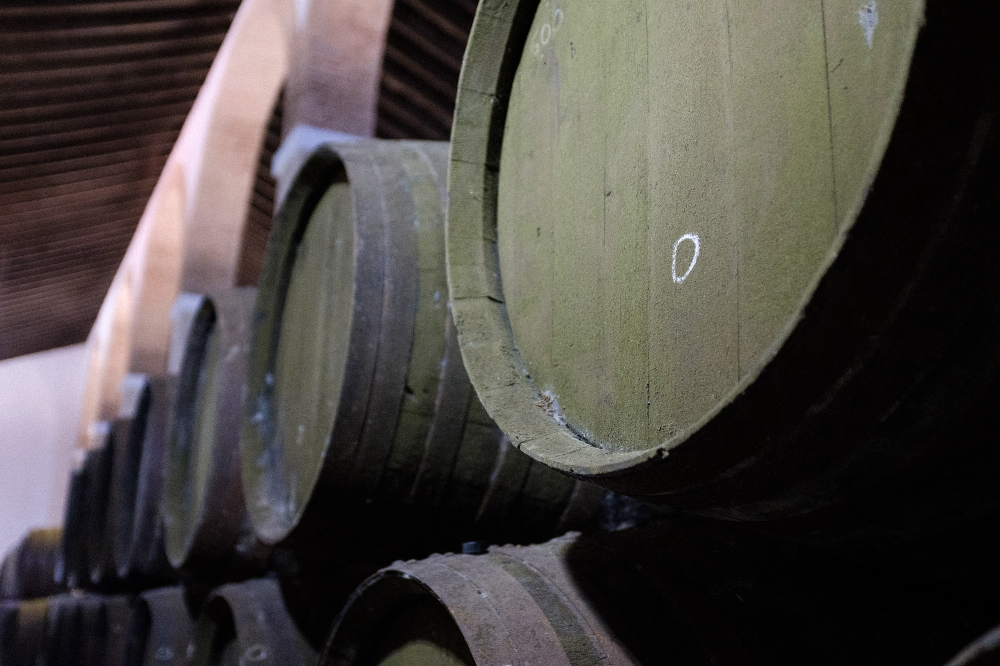
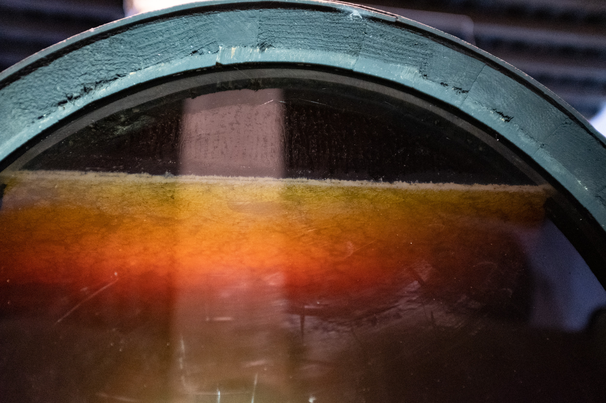
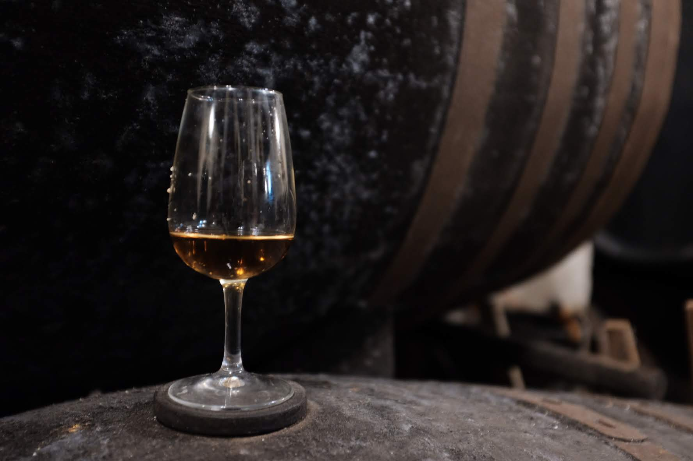

Finaliza tu cerveza en barricas históricas de jerez — enriqueciendo su perfil de malta con profundidad en capas, calidez suave y complejidad refinada.
Solicitar PresupuestoEl envejecimiento en barrica se ha convertido en un sello distintivo de la cervecería artesanal moderna, transformando la cerveza en experiencias complejas y con capas. Entre las opciones de barricas, las de jerez destacan por su capacidad para impartir propiedades organolépticas matizadas.
Cada tipo de barrica de jerez ofrece una contribución distinta a la cerveza, expandiendo las posibilidades para cerveceros que buscan crear ediciones limitadas excepcionales y series premium envejecidas en barrica que sorprenden y cautivan a los entusiastas de la cerveza.

Cada tipo de barrica de jerez ofrece contribuciones únicas a los estilos de cerveza, desde mejorar ales ligeras con complejidad mineral hasta crear imperial stouts similares a postres. Descubre cómo diferentes barricas de jerez transforman tus cervezas.
Envejecida junto al mar en Sanlúcar de Barrameda, las barricas de Manzanilla ofrecen salinidad costera única y delicadas notas de salmuera. La influencia marítima crea mineralidad distintiva perfecta para realzar el carácter campestre en cervezas ligeras.
Envejecido bajo capa protectora de flor, las barricas Fino introducen delicadas notas salinas, almendra verde y manzanilla. Perfecto para cervezas base más ligeras que buscan mineralidad y sequedad percibida manteniendo sutileza y bebibilidad.
El envejecimiento biológico y oxidativo parcial proporciona equilibrio de frescura y profundidad. Enriquece la complejidad del paladar medio con matices de avellana, almendra tostada y toques herbales.
Completamente oxidativo y rico en extractivos, aportando sabores intensos de nuez, higo seco, chocolate negro y cuero. Crea textura aterciopelada con riqueza amplificada y finales cálidos.
Raro y complejo, uniendo la finura del Amontillado con el poder del Oloroso. Introduce delicada cáscara de cítricos, sutiles toques balsámicos y un interesante juego salado-dulce.
Dulzor intenso y riqueza oxidativa imparten poderosas notas de pasas, higo, melaza y miel oscura. Mejora cuerpo y textura en boca, produciendo cervezas exuberantes similares a postres.
El envejecimiento de cerveza en barricas de jerez involucra interacciones químicas entre los ésteres de la cerveza, fenólicos y polifenoles de la barrica, creando una transformación que va mucho más allá de la simple infusión de sabor.
Los compuestos de la barrica de jerez interactúan con los ésteres naturales de la cerveza, creando perfiles aromáticos complejos que evolucionan durante el envejecimiento.
Las barricas de jerez influyen en los niveles finales de acidez, dulzor percibido y equilibrio general de sabor en la cerveza terminada.
La extracción de taninos y compuestos de madera crea una viscosidad mejorada y complejidad textural en cervezas envejecidas en barrica.

Encuentra respuestas a las preguntas más comunes sobre nuestras barricas de jerez premium para envejecimiento de cerveza artesanal.
Las barricas de jerez ofrecen características únicas debido a su proceso de crianza y los compuestos específicos dejados por diferentes tipos de jerez. A diferencia de otras barricas de vino, las barricas de jerez experimentan envejecimiento biológico bajo flor (para Fino/Manzanilla) o envejecimiento oxidativo, creando perfiles químicos distintos. Estos procesos imparten propiedades organolépticas complejas incluyendo notas salinas, características de frutos secos y compuestos oxidativos que transforman la cerveza de maneras que otras barricas no pueden lograr.
Los tiempos de envejecimiento varían significativamente según el estilo de cerveza y el tipo de barrica de jerez. Cervezas ligeras como saisons en barricas Fino pueden necesitar 3-6 meses, mientras que robustas imperial stouts en barricas Oloroso pueden beneficiarse de 6-18 meses o más. Recomendamos degustaciones regulares durante el proceso, ya que las barricas de jerez pueden impartir sabores más rápidamente que roble neutro. Nuestro equipo técnico proporciona orientación específica de tiempos basada en sus estilos de cerveza y perfil de sabor deseado.
Sí, las barricas de jerez típicamente pueden reutilizarse para 3-5 lotes, aunque la intensidad del carácter de jerez disminuirá con cada uso. Las barricas de primer uso proporcionan la influencia de jerez más fuerte, mientras que los usos posteriores ofrecen una integración más sutil. Muchos cerveceros usan esta progresión estratégicamente - primer uso para ediciones limitadas audaces, usos posteriores para aplicaciones más delicadas. La limpieza y mantenimiento adecuados entre lotes es esencial para la longevidad de la barrica.
¿Listo para elevar tu cerveza con barricas de jerez directamente desde Jerez de la Frontera, España? Ponte en contacto y te recomendaremos el perfil de barrica perfecto para tus estilos de cerveza.